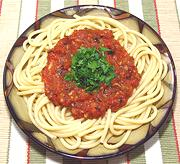

|
Marinara Sauce for PastaItaly - Naples | ||||
| Makes: Effort: Sched: DoAhead: |
2 cups ** 40 min Yes |
This tasty tomato sauce from Naples is made with many minor variations but simple and quick are always the watchwords. Cheese is NOT used with this sauce. This recipe is sufficient for 1 pound of pasta. | |||
| Some insist from the name it must have something from the sea (usually anchovies) but that is false - from the sea were the sailors to whom it was served. Of course, nothing's to stops you from tossing in left-over bait if you please, and Neopolitan fishermen are reported to do so. | |||||
|
|
28 oz 3 2 3 2 2 1/3 1/4 ------- |
can cl T T t t ---- |
Tomatoes Garlic Chili dry (1) Basil leaves Parsley flat Olive Oil ExtV Salt Pepper -- Garnish Parsley |
Prep - (15 min)
|